boymaas.nl atelier, round four: the logo is a screensaver
Round three's composition is kept. The hero is now a port of Omarchy's screensaver machine: a library of effects chained at random, each running to completion, the logo never still, the effect's name shown under the hero, the cursor perturbing whatever runs. Three fixed directions so they could not converge. Each filmstrip is one seeded run, twelve frames over 22 seconds. Open a live page and move through the hero; leave it alone and it keeps going.
Earlier rounds: 7 8 9 4 Amiga 5 SCUMM 6 party 1 2 3
10. Terminal · seed 7
The faithful port. The logo is about 450 half-block characters on a character grid, exactly Omarchy's material, and every cell keeps its glyph while it travels. Ten ports of the Terminal Text Effects library run at 120 steps a second. The caption reads like a prompt with a blinking cursor and a run counter. The dividers are scrolling text on the same grid that decrypt near the pointer. Secret: press : for a vim command line, then :burn, :seed 42, :q.
decrypt · matrix · burn · black hole · fireworks · crumble · print · beams · vhs · rings
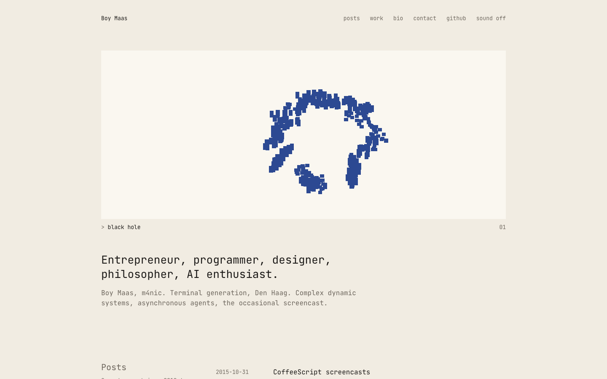
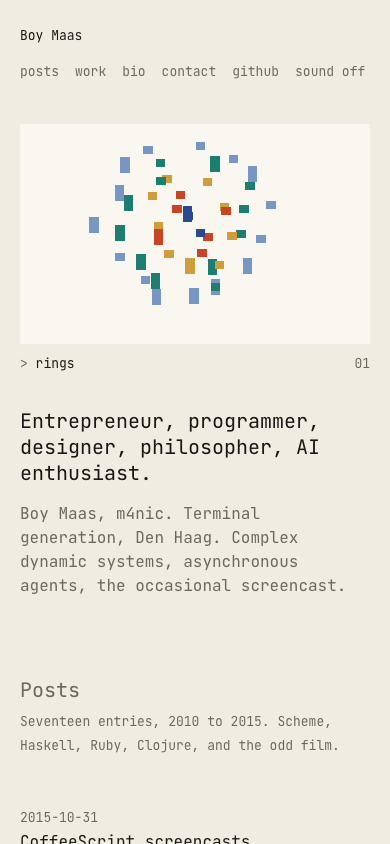
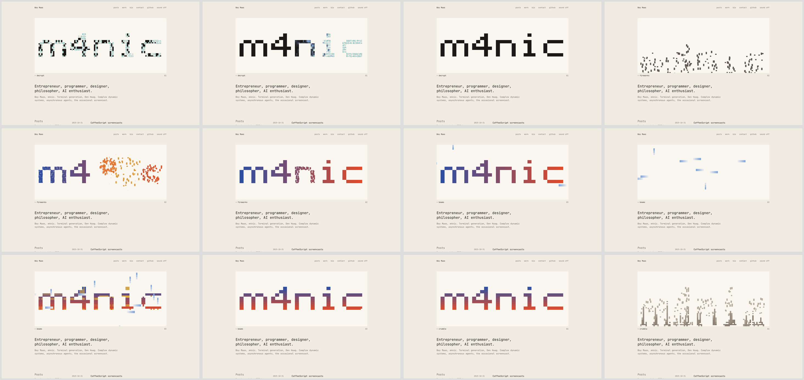
full page
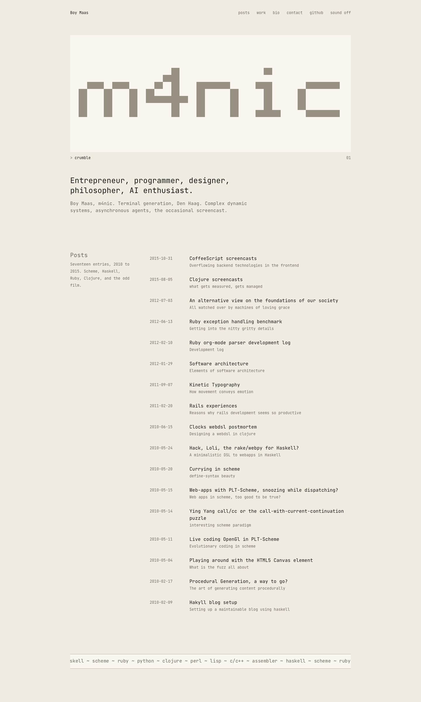
11. Pixel · seed 7
The logo is a 33x9 bitmap in a software framebuffer, and the effects are demoscene transforms of its shape: it tiles and spins, wraps onto a turning sphere, becomes a tunnel, ripples as a flag, gets copper-filled, is sliced, melts, stretches into a scroller, swarms, dithers. Every effect is a three-phase morph that lands pixel-identical on home. Secret: the Konami code flips the screen to night.
rotozoom · sphere · tunnel · flag · copper · slice · melt · scroller · swarm · dither
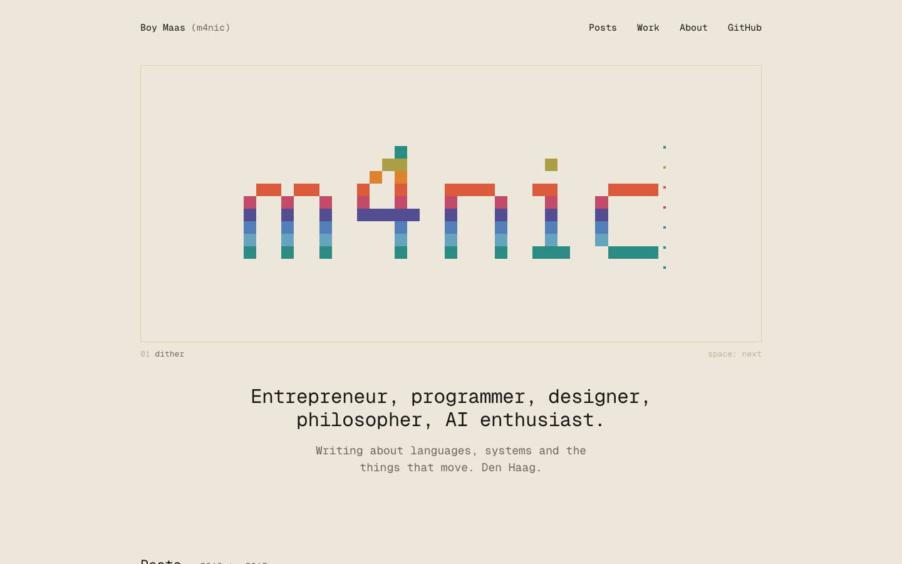
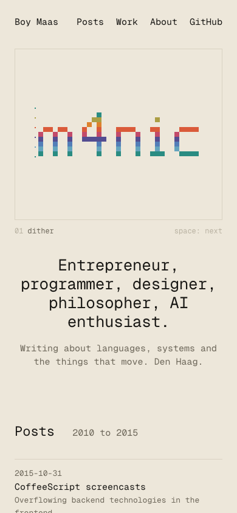
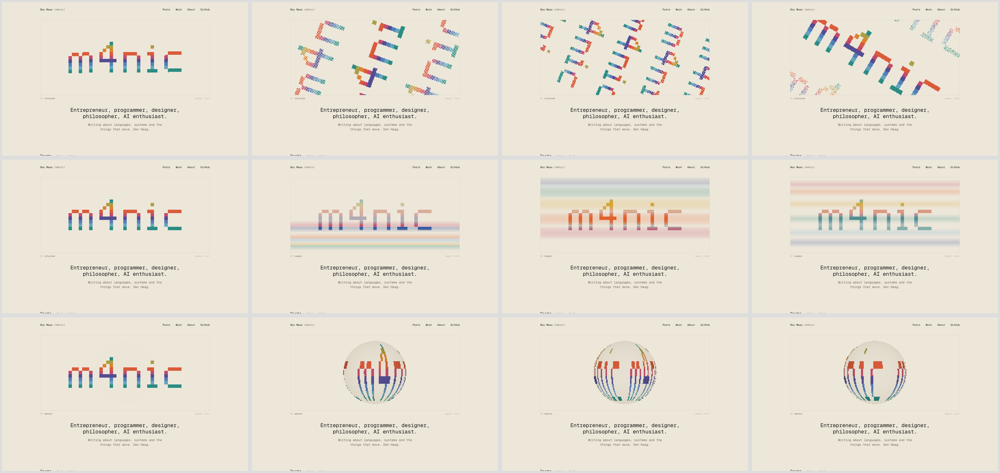
full page
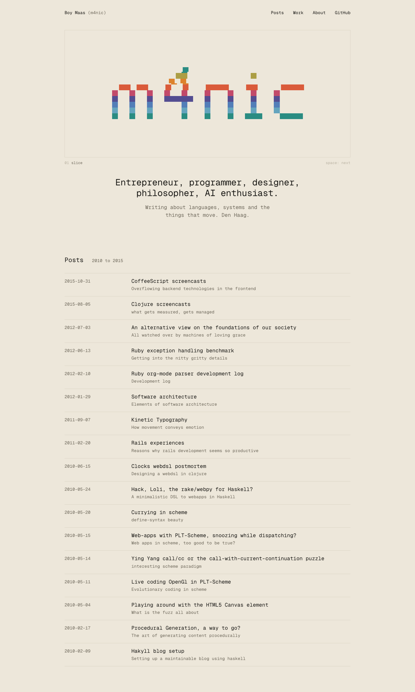
12. Playground · seed 7
The logo is a toy box of 308 cells driven by real simulations: balls fall under gravity, pile on the floor, and spring home; a magnet pulls and repels; sand pours out of the letters and refills; a Game of Life seeded from the logo runs a few generations and is error-corrected back; bubbles sink, rise as rings, pop into place; a swarm flocks; a spring mesh you can pluck; a fluid you stir; a crystal grows. The cursor breaks the running system and its own dynamics heal it. Secret: type play for a sandbox where keys 1 to 9 pick a system.
bouncy balls · magnet · sand · life · bubbles · swarm · spring mesh · fluid · crystal
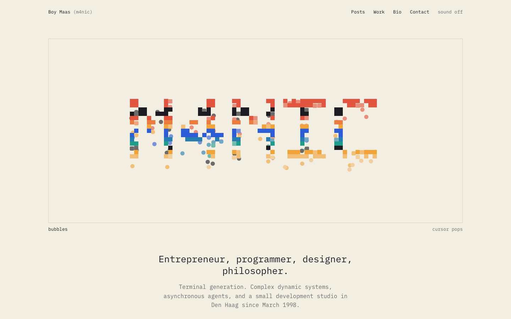
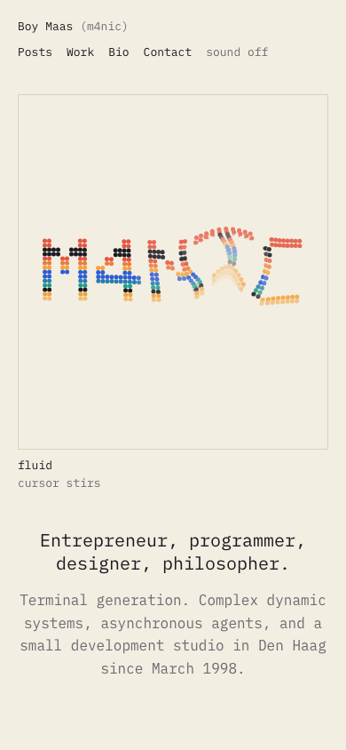
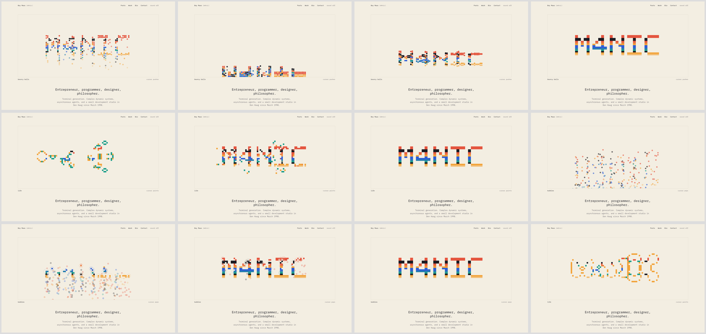
full page
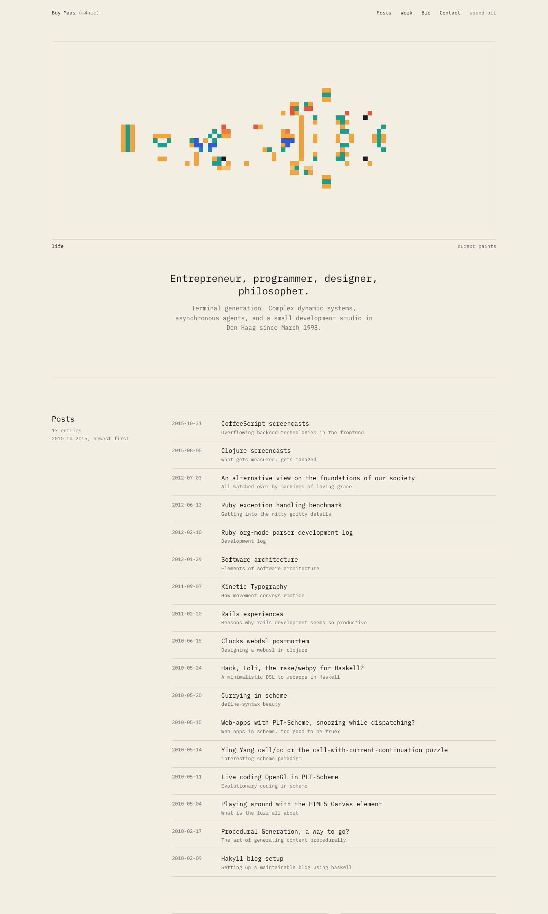